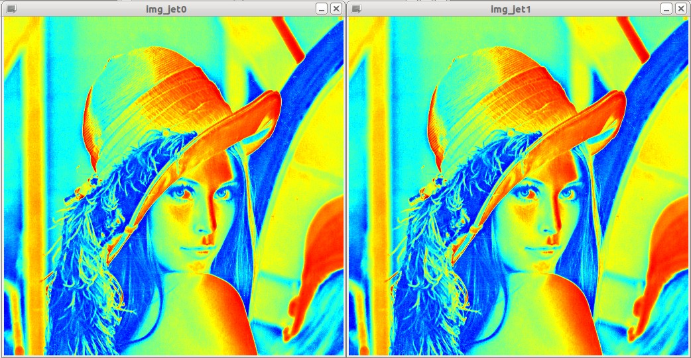

Working with ColorMap¶
Introduction¶
Applying a colormap on an image is very easy with colormap::ColorMap. This page will show you how to use colormaps in OpenCV for your images.
Imagine we want to recolor Lena:

Then recoloring can be done with ColorMap::operator() or by using the ColorMap version of imwrite() or imshow(). Here’s a sample program, that loads Lena and applies various colormaps on the image. The results are shown below the code.
Source Code¶
#include "opencv2/opencv.hpp"
#include "opencv2/highgui/highgui.hpp"
#include "facerec.hpp"
using namespace cv;
using namespace std;
int main(int argc, const char *argv[]) {
// Read the image. It doesn't matter if you load as grayscale or not.
Mat img = imread("/home/philipp/lena.jpg", CV_LOAD_IMAGE_GRAYSCALE);
// Use imwrite wrapper that works with ColorMaps.
string prefix("lena_");
imwrite(prefix + string("autumn.jpg"), img, colormap::Autumn());
imwrite(prefix + string("bone.jpg"), img, colormap::Bone());
imwrite(prefix + string("jet.jpg"), img, colormap::Jet());
imwrite(prefix + string("winter.jpg"), img, colormap::Winter());
imwrite(prefix + string("rainbow.jpg"), img, colormap::Rainbow());
imwrite(prefix + string("ocean.jpg"), img, colormap::Ocean());
imwrite(prefix + string("summer.jpg"), img, colormap::Summer());
imwrite(prefix + string("spring.jpg"), img, colormap::Spring());
imwrite(prefix + string("cool.jpg"), img, colormap::Cool());
imwrite(prefix + string("hsv.jpg"), img, colormap::HSV());
imwrite(prefix + string("pink.jpg"), img, colormap::Pink());
imwrite(prefix + string("hot.jpg"), img, colormap::Hot());
imwrite(prefix + string("mkpj1.jpg"), img, colormap::MKPJ1());
imwrite(prefix + string("mkpj2.jpg"), img, colormap::MKPJ2());
// using a colormap is as simple as doing
colormap::Jet jet;
Mat img_jet = jet(img);
imshow("img_jet0", img_jet);
// or you can use the imshow wrapper
imshow("img_jet1", img, colormap::Jet());
// draw the images
waitKey(0);
}
Results¶
| Colormap Class | Colormapped Lena |
|---|---|
| colormap::Autumn | 
|
| colormap::Bone | 
|
| colormap::Cool | 
|
| colormap::Hot | |
| colormap::HSV | 
|
| colormap::Jet | |
| colormap::MKPJ1 | 
|
| colormap::MKPJ2 | |
| colormap::Ocean | 
|
| colormap::Pink | |
| colormap::Rainbow | |
| colormap::Spring | |
| colormap::Summer | 
|
| colormap::Winter | 
|
And here are the imshow() results:
